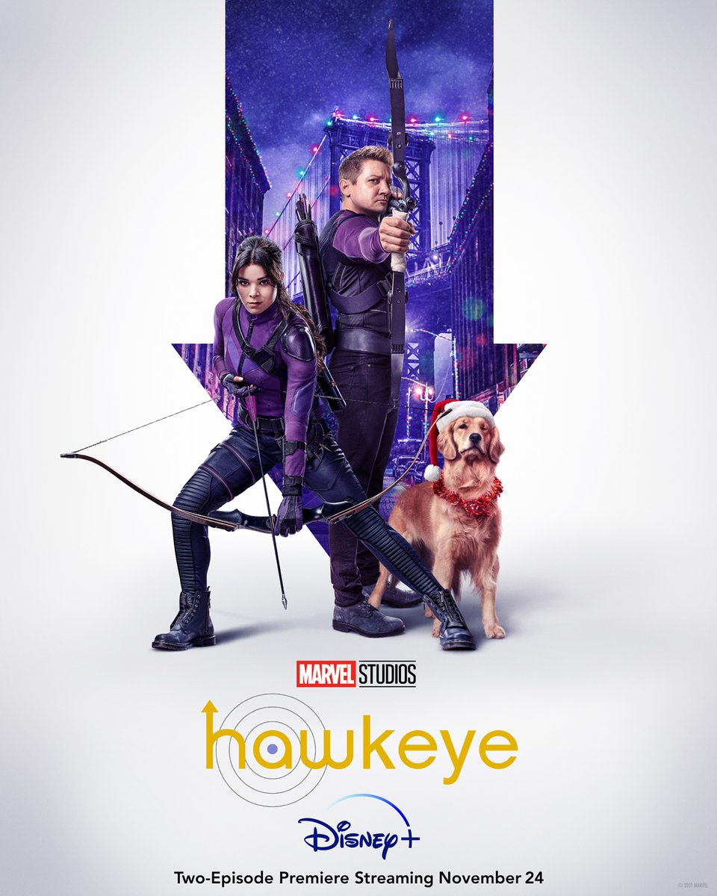
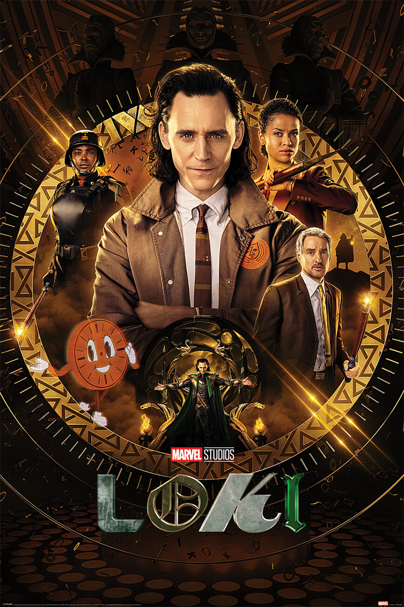

WandaVision
The return of Wanda and Vision to the screen was wild to see. Finally being able to see the true depth and abilities of Wanda gave a lot more clarity to how she was able to take down the mad titan Thanos in Avengers: Endgame. Additionally, having Wanda labeled as a criminal was extremely exciting to see because in this case, she was not trying to redeem/clear her name but instead actually was a criminal doing something wrong. With Randall Park and his comedic relief too, this show is truly one to rewatch. There are two downsides to this show. 1) The first few episodes of WandaVision show were arguably useless. They did not address anything that was relevant to the grand scheme of story development and can most definitely be skipped. 2) Character casting. While the normal fan might not know this, Dr. Strange was in fact supposed to play a large role. This also makes a lot of sense at this point in time with the second Dr. Strange trailer being released and showing the relationship between Wanda and Dr. Strange. The reason Dr. Strange was not casted for this role was because he was replaced with a brand new Monica Rambeau. Monica was the daughter of Mariah who starred in Captain Marvel but they inserted Monica into the story and essentially gave her Shazam. Marvel replaced Dr. Strange with Monica and in return deviated far from the original comic book story line and an arguably epic crossover.

Hawkeye
Hawkeye is a very argumentative number one pick and there are two main reasons for that: 1) time period and 2) villain development. The reason this show is tough to rewatch is that it is very holiday focused. With the show being centered around Christmas, it is very difficult to watch during any other part of the year. Villain development in Hawkeye is a little undersold. Kingpin is supposed to have a vast amount of resources who is also very invested in high tech plots but that was not represented in the series. Beyond those two points, the show was very well done. Hawkeye properly introduced a new junior Avenger - Hailee Steinfeld - and incorporated a very similar Iron Man and Spider-Man dynamic. Clint Barton returns to his role as a mentor trying to right his wrongs with a fun twist. The whole series is very wholesome and fun to watch. The characters are simple. And that is all you need to know going into watching Hawkeye.

What if…?
What if..? was completely in its own league. This show was the chance for Marvel to start having fun with different characters over time after seeing their potential as well. By mixing things up throughout history that completely change the outcome of the universe, What if…? brought a new perspective to the Marvel Cinematic Universe that made viewers genuinely ponder…What if…? The reason why this series is not ranked higher comes down to relevance. Episodes like with the zombies and having disappointing endings to dominating characters like Thanos left people saying “Seriously…?” instead of “What if…?” and there was a loss of interest all around.

Loki
Loki was a series that I had a lot of hope for. Tom Hiddelston is a phenomenal actor and his character has a lot of potential, but in the end the show just sucked. The character development was boring. The plot was anticlimactic. And most of all there was no direction. The reason however it was better than The Falcon and the Winter Soldier was that at least it was unexpected. Although the plot was boring and ridiculous, the show was not predictable. It was unpredictable in a bad way where characters did what they didn’t want and there was not a lot of growth, but in the end Loki is a show that you can mindlessly watch.

The Falcon and the Winter Soldier
I want to start with the two good things about this show. 1) The diversity piece was great. Having Anthony Mackie assume the role of Captain America which is notorious for being a white male was great and having him speak on diversity at the end was inspiring. 2) Having a dynamic between Bucky Barnes and Sam was so nice and wholesome to see. With the addition of interesting tech between the Falcon suit and Winter Soldier arm, the main character dynamic was very interesting and fun to see. Now onto the nitty gritty. The movie plot idea and development was horrible. The villains had no real purpose and were just there to be there. Additionally the fake Captain America was useless as well. If you trim the unnecessary elements of the movie, all you have are the quirky moments of conversation between the Falcon and the Winter Soldier, and that’s about it.